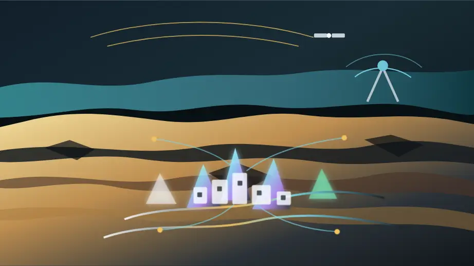
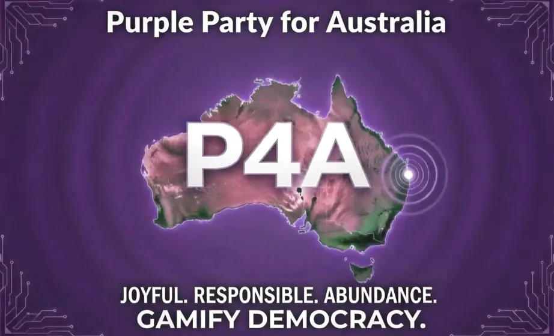
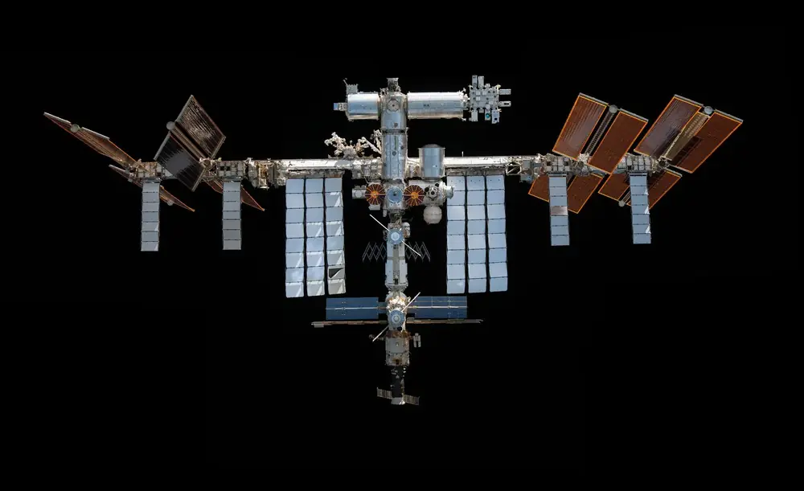
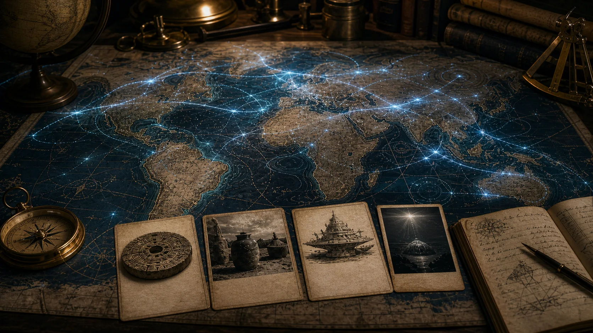

World Travel Patterns
Place research, layered rules, culture cycles and upcoming events, linked directly from the field guide.
Follow the projects that help explore strange mysteries and get around the world. Start with place research and travel tools, then go deeper into sky, space and source trails.
A focused selection from the Strange But True Community Ledger, reviewed on 11 November 2026. Each project retains its own data, tools and development status.
Browse the wider Community LedgerPlace research, layered rules, culture cycles and upcoming events, linked directly from the field guide.
Routes, documents and logistics for shaping a journey.
Travel intake and planning tools for questions, decisions and field notes.
Research the activities you want to undertake as well as entry permission.
Discover public organisational routes into a place and prepare a relevant introduction.
Follow the space-weather research lane and its source trails.
Explore solar and geomagnetic questions through an evidence ledger.
Explore solar-system missions and sensor choices through an interactive design study.
Explore elements and unusual materials as a route into science questions.
The original May 2026 collection connects the atlas to its source briefs, research and governance context.
The family home for the tone: strange, useful, public-facing and careful about what belongs in public.

The moonshot shelf that first held the Cosmic Nexus and Abyss Protocol sparks before this standalone atlas began.

The civic simulation neighbour for local-first nodes, legal memory, open debate and public-interest data ideas.
The legal source-trail workbench that can help future travel, research and civic simulations stay properly framed.

A peaceful ISS preservation review hypothesis. Useful space-strategy context, not Cosmic Nexus evidence.
The Brisbane peaceful space and civic AI summit doorway, useful for public event framing and community support.

The newer travel-strategy workbench that can help Cosmic Nexus grow toward group trips, host circles, dated route planning and friends around the world.
The early data-and-alerts neighbour for space weather, Earth resilience, earthquake research questions and public preparedness.
The earlier Cosmic Nexus club page is a source seed. This repo rebuilds it as a clearer public invitation to build.